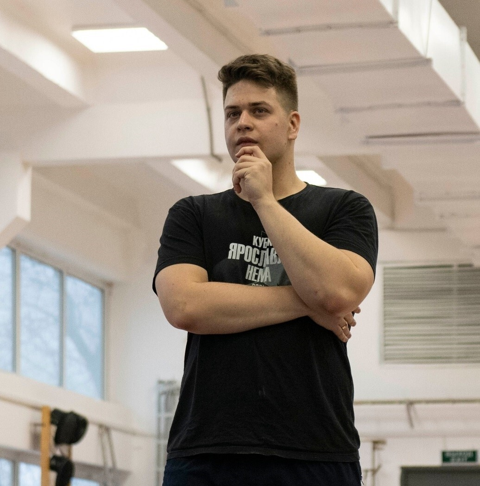
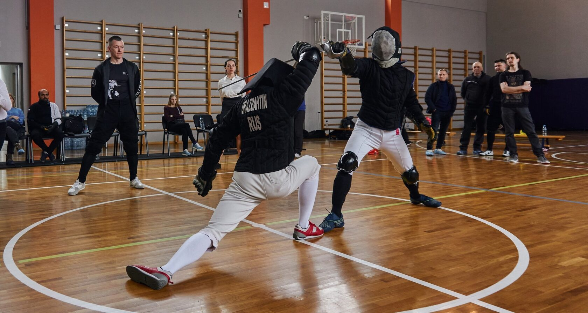
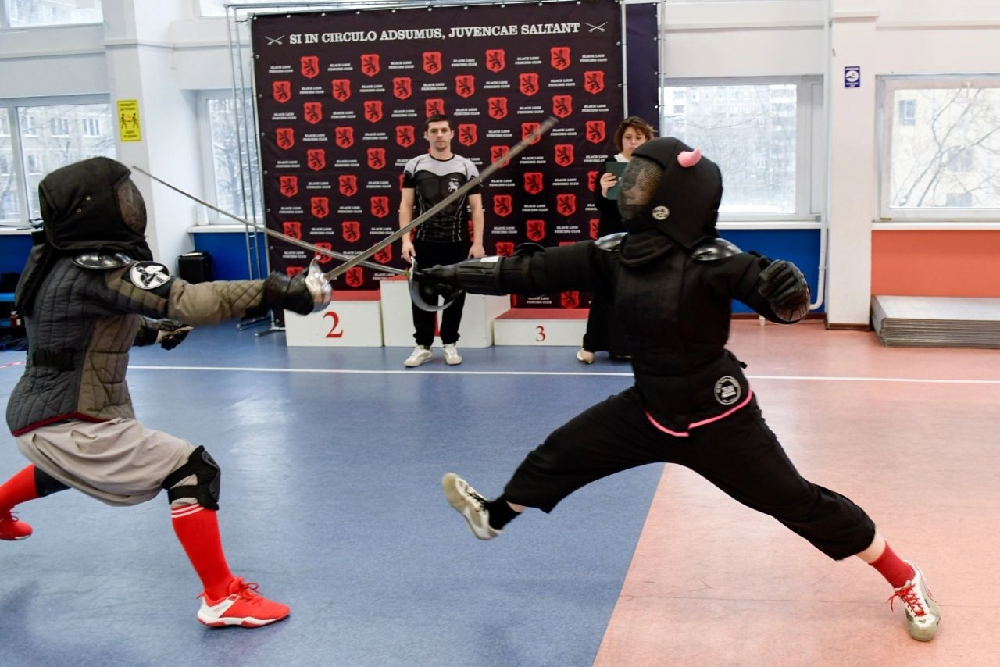
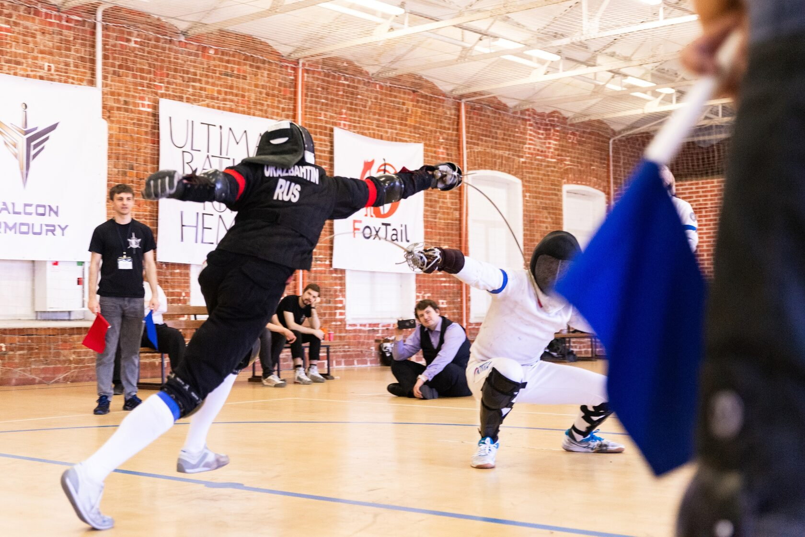
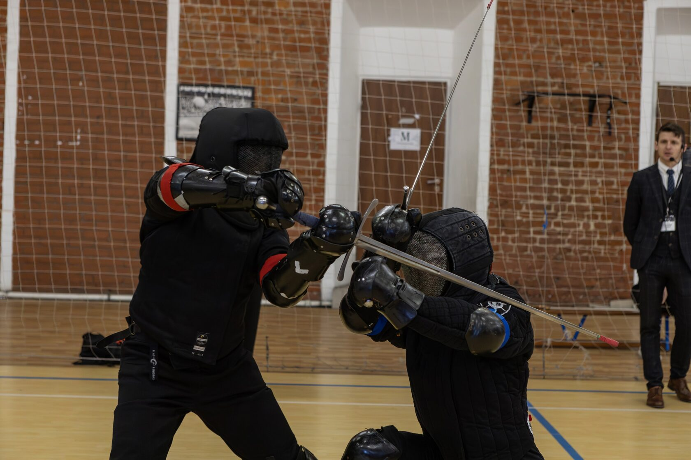
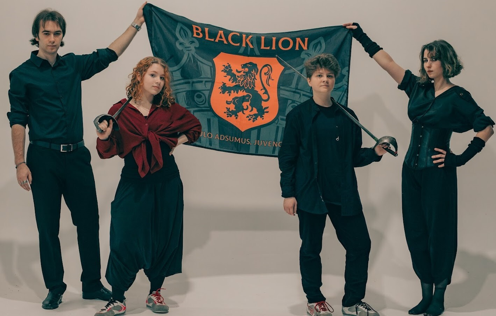
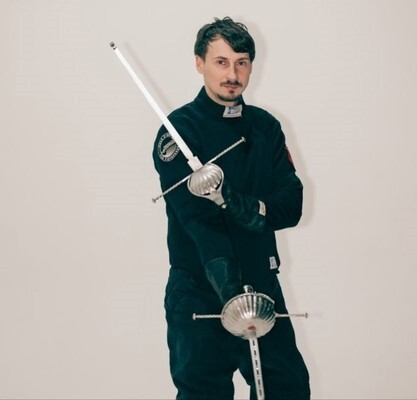
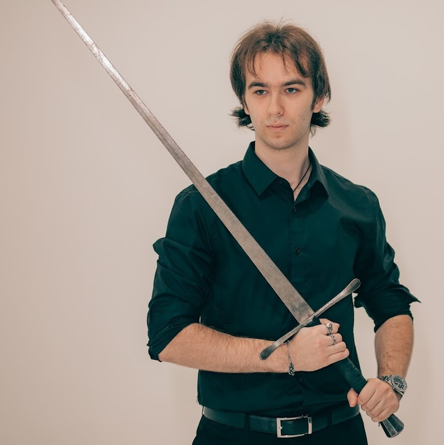
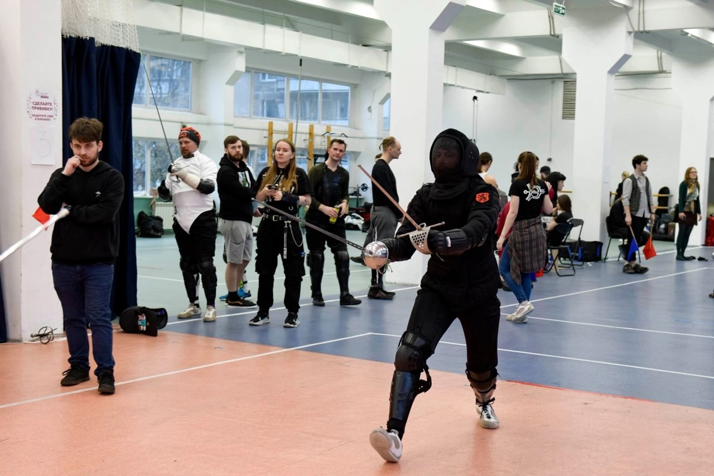

Военная сабля
Клуб исторического фехтования · Москва
Сабля, рапира, длинный меч.
Искусство поединка — в хорошей компании.
Можно без опыта.
Экипировку для первого занятия дадим.

01 / Направления
От первого движения до осознанного поединка.
Выбери направление, которое тебе ближе.

Характер в каждом движении.
Динамика, дистанция и точный удар.

Искусство переиграть соперника.
Техника, тактика и чувство момента.

Две руки. Множество возможностей.
Исторические техники в современной практике.

ЛЮДИ, С КОТОРЫМИ ХОЧЕТСЯ СКРЕСТИТЬ КЛИНКИ02 / Свои люди
Black Lion — место для людей разных профессий и интересов, которых объединяет любовь к фехтованию. Здесь изучают исторические техники, делятся знаниями и встречаются в дружеских поединках.
ВместеГрупповые занятия, работа в парах и поддержка единомышленников.
ЛичноИндивидуальные уроки: внимание к твоей технике и темпу обучения.
03 / Тренеры
Помогут с первым шагом.
И заметят то, что ты пока не замечаешь.

Военная сабля

Рапира Ренессанса

Длинный меч · Военная сабля Kids
04 / Расписание
Групповые тренировки.
Индивидуальные — по договорённости.
Расписание перенесено с сайта клуба. Перед первым визитом уточни время у тренера.
05 / Жизнь клуба
06 / Перед первым шагом
Это нормально.
Мы тоже когда-то начинали.
Да. В клубе занимаются и опытные спортсмены, и те, кто только начинает. Если есть особенности здоровья, заранее сообщи тренеру: это поможет подобрать подходящую нагрузку.
Удобную спортивную форму, кроссовки и воду. Специализированную экипировку для первого занятия предоставит клуб.
Основные направления — с 18 лет. Для подростков от 14 до 17 лет есть группа «Военная сабля Kids».
Historical European Martial Arts — исторические европейские боевые искусства. Мы изучаем исторические техники фехтования и практикуем их с тренировочным оружием и защитной экипировкой.
Твой первый поединок начинается со знакомства
Напиши нам — поможем выбрать направление
и договоримся о первой тренировке.
07 / Место встречи
Вход с торца дома.
Ориентир — пункт выдачи Ozon.

УВИДИМСЯ НА ТРЕНИРОВКЕ.